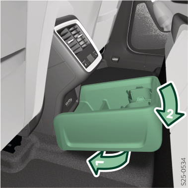

Mise en place

Insérer le vide-poche avec la zone avant sous le bord de la console centrale.
Poussez à l'arrière du vide-poche jusqu'en butée.
Vérifier que le vide-poche est correctement verrouillé.
Retrait
Le retrait s'effectue dans l'ordre inverse.